Integrering av fornybar energi#
Når vi tar for oss integrasjon av fornybar energi i distribusjonsnettet, fokuser vi på hvordan vi skal koble strømkilder som sol og vind til kraftnettet. Som beskrevet i 3D (De tre D’ene; Dekarboniseering, Digitalisering, Desentralisering) rammeverket og FN’s visjon om ren energi for alle er vi forpliktet til å sikre tilgang til pålitelig, bærekraftig og moderne energi for alle. Andelen ren energi er høy i Norge på grunn av vannkraften, men er avhengig av mengde vann som tilsig til vannmagasinene. Sol- og vindkraft er viktige bidrag for å oppnå bærekraftsmålene i tilegg har de større grad av skalerbarhet enn vannkraft. Men sol- og vindkraftens intermittente (periodevis, dvs. ujevn produksjon) natur kompliserer de dynamiske forholdene og stabiliteten i kraftnettet.
Modellering og simulering#
Vi må derfor simulere tilstander som kan oppstå for å kunne analysere integreringen av fornybare energikilder på nettet. De kjente transmisjonslinjemodellene må da utvides til å ta opp i seg dynamiske forandringer i nettet, som vist i Fig. 23. De tradisjonelle metodene (\(\pi\)-metoden) modellerer vanligvis enveis effektflyt. Med skalerbar lokal produksjon kan strømmen tidvis gå motsatt vei:
solceller
vindkraft
batterier
elbiler med V2G (Vehicle-to-Grid)
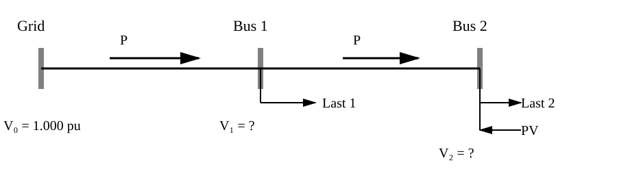
Fig. 23 Reversibel effektflyt på noder med PV-produksjon#
Reversibel effektflyt#
Den reversible effektflyten fra større andel distribuert produksjon kan gi høyere lokale spenninger, endrede kortslutningsforhold og komplisere vernkoordineringen. Vi må derfor ha noen simuleringsverktøy for å analysere disse forholdene.
IBR#
Sol- og Vindkraft er også basert på invertering (vekselretting) av signalet fra DC til AC og kalles derfor Inverter Based Resources (IBR). Omformingen skjer med kraftelektronikk uten inertian som den roterende masse bidrar med.
Vindkraft#
Selv om Vindtubiner roterer må signalet først likerettes (AC/DC) også vekselrettes (DC/DC) i en operasjon som kalles back-to-back (rygg-mot-rygg) som illustrert i Fig. 24. DC-linken fungerer som et energilager med liten kapasitet som stabiliserer likespenningen mellom omformerne. Den frikobler generatorsiden fra nettsiden slik at generatoren kan operere med variabel frekvens, mens inverteren leverer en kontrollert spenning med 50 Hz til nettet.
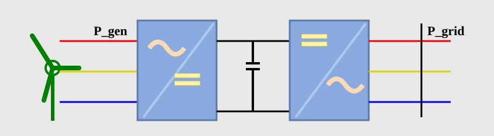
Fig. 24 Back-to-back omformer for vindturbin.#
Begge omformerne genererer PWM-signaler som gir høyfrekvente effektpulser. Momentant kan effekten på generatorsiden og nettsiden være forskjellig:
Selv om middelverdien over tid er den samme må DC-linken absorbere differansen mellom effekten inn og ut:
hvor \(P_C\) er effekten som til enhver tid lagres eller frigjøres av DC-link-kondensatoren. Energien i kondensatoren varierer dermed i henhold til:
Den lagrede energien i DC-linken er gitt ved:
der
E er lagret energi [J]
C er kapasitansen [F]
\(V_{dc}\) er DC-linkspenningen [V]
Hvis kondensatoren er for liten, vil energiinnholdet variere merkbart, noe som fører til spenningssvingninger i DC-linken. DC-linkens hovedoppgave er derfor å fungere som en energibuffer som glatter ut effekt- og spenningsrippel mellom de to PWM-omformerne og opprettholder en mest mulig konstant DC-spenning.
Solkraft#
For at solkraften skal kunne integreres på net må den inverteres (vekselretter) i en inverter, som i Fig. 25.
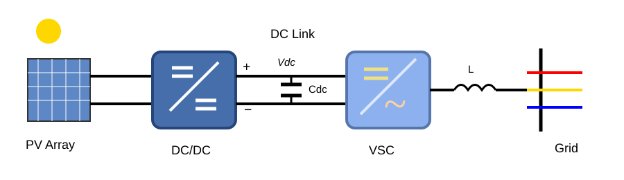
Fig. 25 Omforming i en solcelle#
DC-DC omformeren holder spennigsnivået stabilt, selv om det er fluktuerende solinnstråling på solcellen. Kondensatoren lagrer energi i DC-linken før det stabile signalet vekselrettes til nettet. Spolen L glatter ut PWM-generert strømrippel fra inverteren, reduserer harmoniske som sendes ut på nettet og gjør det mulig å regulere aktiv og reaktiv effekt på en kontrollert måte. Det fungerer som det viktigste filterelementet mellom VSC-en og kraftnettet.
P_{conv}#
Det er nyttig å kunne modellere tapene i omforming av signaler. Omformertapene kan modelleres som \(P_{conv}\)
Pandapower#
Pandapower kombinerer pandas biblioteket med kraftflytsolveren PYPOWER. Den muliggjør løsnig på problemer tilknyttet reversibel effektflyt.
Kall på statistikken#
For å vise problemstillingens aktualitet gjør vi et API-kall til statistikkbanken til Statistisk SentralByrå (SSB). Kilden er SSBs tabell 08307. requests henter dataene og pyjstat leser, tolker og deretter bygger en tabellstruktur. Vi skal be python sende en post forespørsel til SSB (requests.post(url, json=query).text) i en query som bruker JSON-kode, der SSB returnerer svaret i et JASON-stat-format.
Først importeres bibliotek:
import requests
import pandas as pd
from pyjstat import pyjstat
Hvilke metadata inneholder tabellen:
meta = requests.get(f"https://data.ssb.no/api/v0/no/table/08307").json()
print("Tittel:")
print(meta["title"])
Tittel:
08307: Produksjon, import, eksport og forbruk av elektrisk kraft (GWh), etter statistikkvariabel og år
Kilden er SSBs tabell 08307 gir statistikkvariablene ["VindKraft, "Solkraft"].
TABLE = "08307"
VARIABLES = ["VindKraft", "Solkraft"]
Et query bestemmer hvilke data som skal hentes og response hvordan dataene returneres. I ContentsCode finner vi flere statistikkvariabler selection velger verdiene det skal filtreres på filter:itemangir de eksakte verdiene, som velges i VARIABLES:
query = {
"query": [{
"code": "ContentsCode",
"selection": {
"filter": "item",
"values": VARIABLES
}
}],
"response": {"format": "json-stat2"}
}
Vi kaller opp nettstedet og ber pyjstat lese df og returnere tabell:
url = f"https://data.ssb.no/api/v0/en/table/{TABLE}"
df = pyjstat.Dataset.read(
requests.post(url, json=query).text
).write("dataframe")
df.pivotgjør om til bredt format, og vi indekserer på år index:year:
df_wide = df.pivot(
index="year",
columns="contents",
values="value"
)
df_wide = df_wide.rename(columns={
"Wind power production": "Vind",
"Solar power production": "Sol"
})
Norsk sol- og vindkraft#
API-kallet kan genereres som en dataframe som gir historiske tall, som vist i Table 2, over sol og vindkraftproduksjonen i Norge.
År |
Sol |
Vind |
|---|---|---|
2019 |
NaN |
5525 |
2020 |
25 |
9911 |
2021 |
33 |
11768 |
2022 |
63 |
14810 |
2023 |
165 |
13965 |
2024 |
251 |
14545 |
2025 |
348 |
13899 |
Vi plotter dataene som synliggjør den historiske utviklingen av sol- og vindkraft i Fig. 26.
Fig. 26 Produksjon av sol- og vindkraft i Norge.#
Kilde: SSB Statistikkbanken API, tabell 08307.
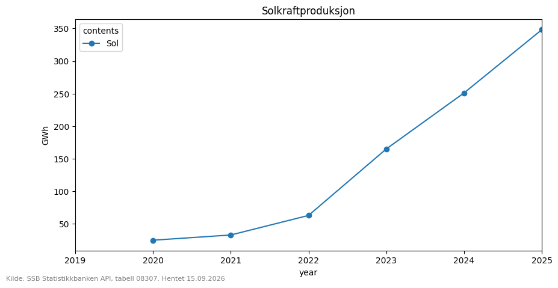
Kilde: SSB Statistikkbanken, tabell 08307
https://www.ssb.no/statbank/table/08307
Endrede tilsig#
Norge har 1600 vannkraftverk og omtrent 1200 innsjøer regulert til kraftproduksjon, som gjør det mulig å lagre kraft innenfor reguleringsintervallene lavest regulerte vannstand (LRV) og høyest regulerte vannstand (HRV). Blåsjø er norges største regulerte vannmagasin med reguleringshøyde på 125 m og et magasinvolum på 3105 millioner kubikk som tilsvarer et energipotensial på 7,8 TWh.

Fig. 27 Blåsjø.#
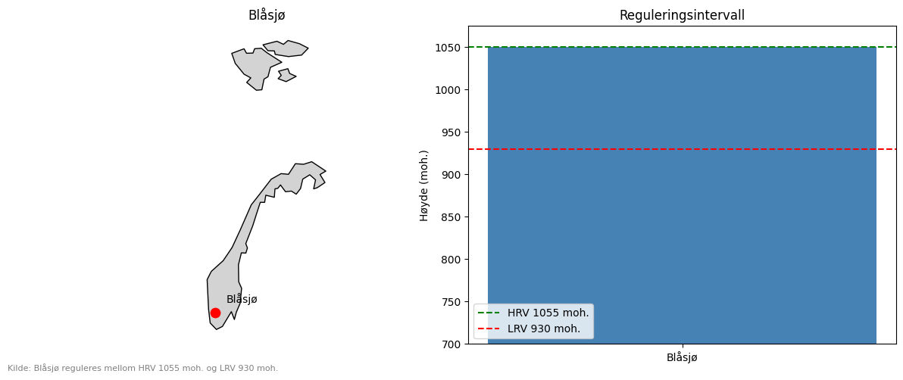
Fyllingsgrad på 1,2,3#
Hver uke samler NVE vannstandsmålinger fra de 489 viktigste vannmagasinene, og publiserer de i sitt API. Det totale volumet er 56000 millioner kubikk som tilsvarer 87 TWh.
For hvert magasin summeres energiekvivalentene, hvor mye energi som produseres per kubikk som går igjennom kraftverket (\(kWh/m^3\)) og multipliseres med fyllingsvolumet: $\(E_{M1} = V_{M1}\,(e_{K1}+e_{K2})\)$
der:
\(E_{M1}\) = energiinnhold (GWh)
\(V_{M1}\) = fyllingsvolum (mill. m³)
\(e_{K1}, e_{K2}\) = energiekvivalenter (GWh/mill. m³)
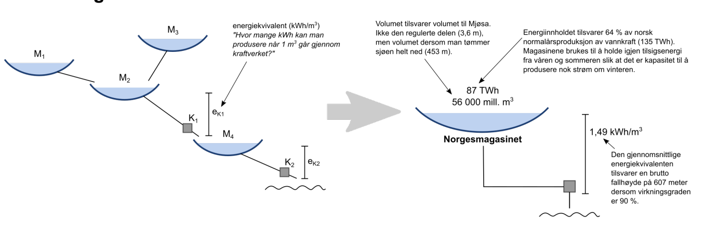
Energiinnholdet summeres og deles på det totale energiinnnholdet og slik finner man fyllingsgraden:
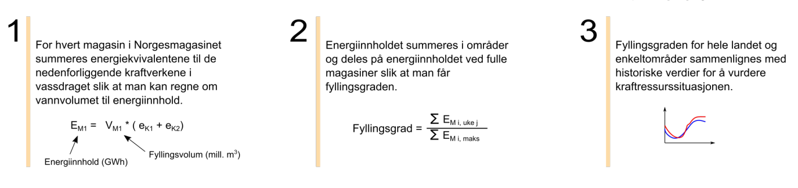
Vannstandsmålinger samles hver uke og publiseres onsdager kl. 13
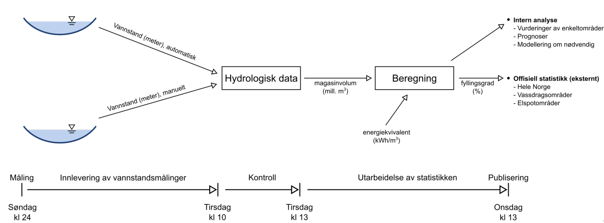
Vannmagasinstatistikk#
Ved å følge utviklingen fra uke til uke og sammenligne med historiske tidsseriedata fra de 20 siste årene kan man kontrollere tilsigsenergien og opprettholde forsyningssikkerhet.
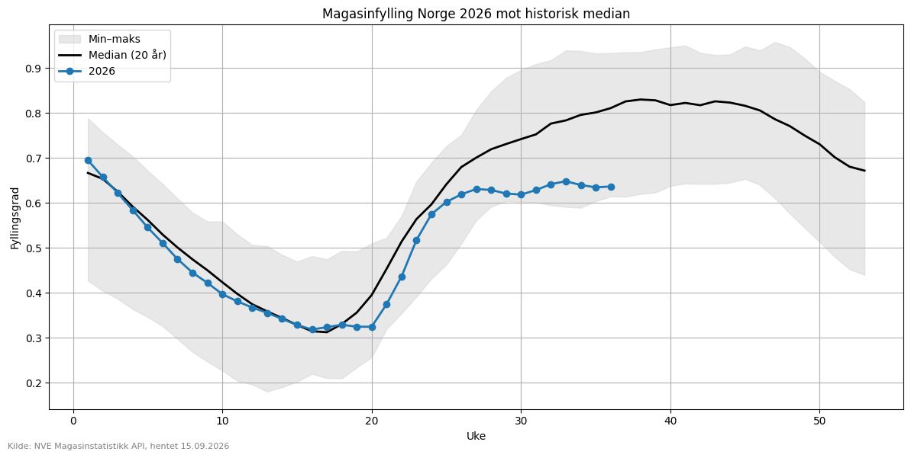
Import og eksport#
Tilsigsenergien modereres også av utveksling av energi gjennom internasjonale kraftforbindelser. HVDC forbindelsene fasiliteres av back-to-back slik at synkronområder isoleres.
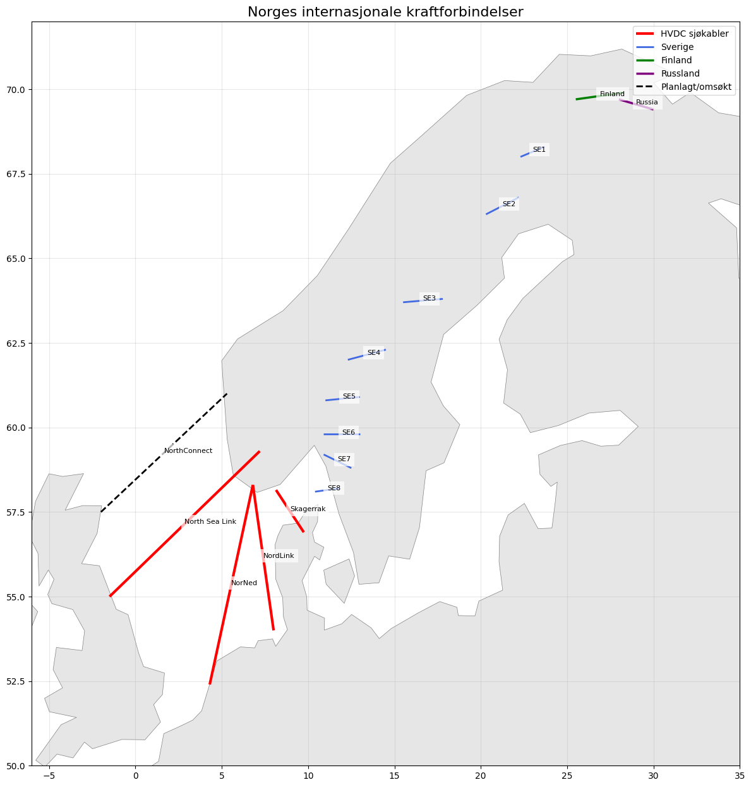
Statistikkbanken til SSB i tabell 08307 inneholder også statistikkvariablene import og eksport og vi gjør et nytt kall til APi-et mot disse verdiene.
query = {
"query": [{
"code": "ContentsCode",
"selection": {
"filter": "item",
"values": ["Import", "Eksport"]
}
}],
"response": {
"format": "json-stat2"
}
}
Fra 2000 til i dag eksporterte vi i gjenomsnitt 18299 GWh og importerte 8698 GWh.
df_wide.loc["2000":].mean()
contents
Eksport 18299.884615
Import 8698.846154
dtype: float64
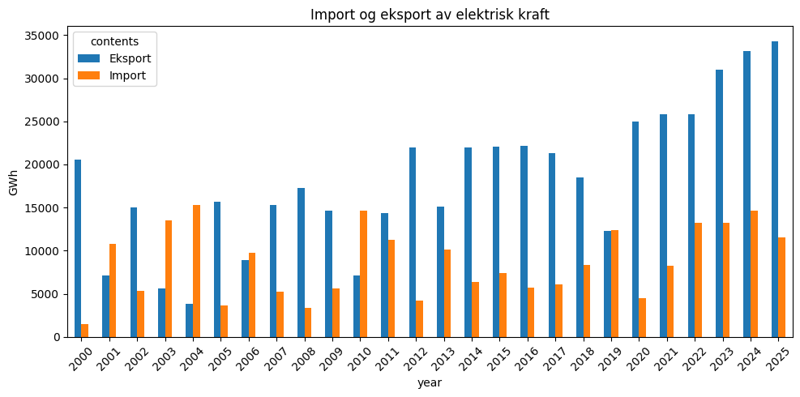